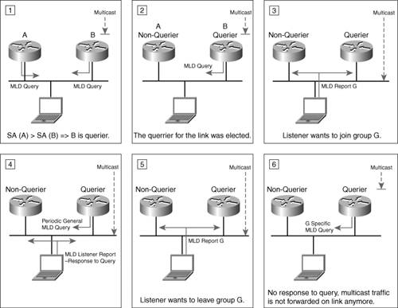
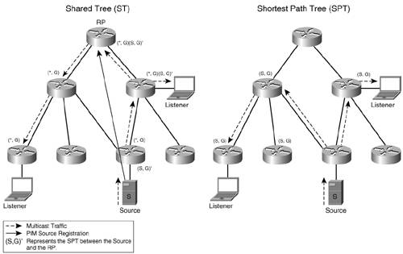
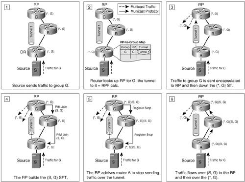
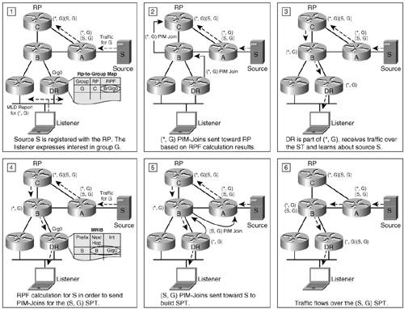
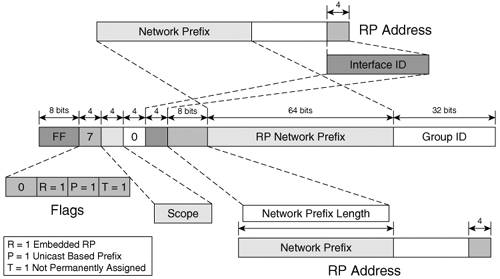
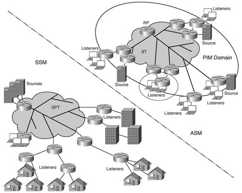

IPv6 MulticastAn important aspect of the multicast service is addressing. Whereas a unicast address identifies a node, a multicast address identifies a group of nodes interested in the same data. There are no constraints on the location of a group's members. A packet with a multicast destination address (DA) is delivered to all members of the group identified by that address. IPv6 multicast, like unicast, benefits from the new addressing architecture defined in IPv6 for the following reasons:
Chapter 2 presents the IPv6 multicast addressing architecture for both layer 2 and layer 3 of the OSI model. This chapter builds on that knowledge to provide a review of key concepts such as multicast group, multicast domain, multicast trees, and service-supporting protocols. Group Membership ManagementMulticast addresses define "forums" for applications to deliver their content to. These forums (called groups) have a dynamic audience that users can join or leave. On a link, the group is managed through several protocols at both layer 2 and at layer 3 of the OSI model. Multicast Listener DiscoveryThe Internet Group Management Protocol (IGMP) is used in IPv4 to enable hosts on a link to join a multicast group, leave it, or simply communicate to a router their group membership. In short, it manages the multicast-related interaction between listeners and routers. IGMP went through several developmental iterations: IGMPv1, IGMPv2, and IGMPv3. The later versions are backward compatible, but each adds features that enhance the operation of its predecessor. Protocol DescriptionThe Multicast Listener Discovery (MLD) protocol is performing IGMP's function in IPv6. There are two versions of the protocol, MLDv1 and MLDv2. They map identically the last two versions of IGMP, as shown in Table 6-2. Similar to IGMP, MLD is built on top of ICMP.
For each of its links, a router has to keep track of all multicast groups that have listeners. It needs to maintain this state to decide whether it should accept traffic for a multicast group and whether it should forward that traffic out its interfaces. On the other hand, by default, routers do not have to track every listener on an interface. They just have to know whether there is at least one active listener. To perform this function, on each link a single router is elected to query for listeners. In this sense, on a link a router can be in a querier (sending periodic general queries) or a nonquerier state. All routers start as queriers, but only the one using the lowest source address (SA) (link-local address is used as the SA) on its queries for a given link remains active. The querier sends general queries ("Any listener out there?") or specific queries ("Any listeners for group G?"). When a router is informed of a listener's departure, the latter query type represents an optimal way to verify whether any other listeners remain in the group that was just left. Note If a router queries a specific group, the packet is sent to the multicast address of that group. The response to the query is sent with the same DA, and the router ignores it if the router has not subscribed to that group, too. For this, reason a hop-by-hop extension header with a Router Alert option (see the "Hop-by-Hop Options Header" section in Chapter 2) is used with the MLD ICMPv6 packets. It forces routers to examine messages destined to multicast groups that the router is not subscribed to. Nodes respond to queries with report messages that indicate the groups and sources their interfaces are listening to. Report (MLDv2) or Done (MLDv1) messages are also sent by nodes to indicate a change in the listening state of one of their interfaces. The MLDv1 messages are used to perform the following functions:
Note All MLD packets are sent with a link-local address as the IPv6 SA. The hop limit is set to 1. This is done to make sure the packet is not routed outside of the link. MLDv2 enhances MLDv1 by enabling a node to express or report interest in a particular source for a multicast group. This capability optimizes the multicast operation through a more discrete control of group membership. It also provides the support for the Source Specific Multicast (SSM) deployment model that is discussed later in this chapter. The MLDv2 query message performs the same functions as its MLDv1 counterpart. In addition, it supports multicast-source specific queries. The capabilities of the report message were also enhanced for MLDv2. It concatenates a set of records, each record containing information that relates to a given multicast address. This structure offers enough flexibility to the MLDv2 report message to perform the function of the MLDv1 done message, too. MLDv2 does not use done messages. Note MLDv2 is backward compatible with MLDv1, and for this reason it must support the MLDv1 messages, including the 131 and 132 types (see Table 6-2). Figure 6-1 summarizes some aspects of the MLDv2-governed listener-router interaction on a link. Figure 6-1. Conceptual Representation of Listener-Router Interaction on a LinkOn Cisco routers, MLDv2 is enabled by default on all interfaces as soon as multicast routing is globally enabled on the router (using the global configuration command ipv6 multicast-routing). Example 6-1 shows an example of the MLD operational status on an interface. Example 6-1. MLD Operational Status on a Router Interface
The MLD-specific parameters such as query interval, timeout, or max response time that are highlighted in the example above can be configured under each interface. The output also lists the querier for the link; in this case, it is FE80::20D:29FF:FEE1:4DC0, the router in the example. Source Specific Multicast Mapping for MLDv1The SSM service model discussed later in this chapter requires a host to specify both the multicast group it intends to join and the specific source it intends to listen to. Only MLDv2 supports this functionality on the hosts. Although SSM is a popular deployment model, MLDv2 is not commonly implemented on IPv6 stacks at the time of this writing, so a solution is necessary to make SSM work with MLDv1. This solution is called SSM mapping for MLDv1, and it operates in two modes:
This feature, available on Cisco routers, enables IPv6 hosts supporting only MLDv1 to receive SSM-based multicast services. Note IPv4 faces the same problem of little support for the newer IGMPv3 protocol. While the host stacks are getting updated to include IGMPv3, the same mapping solution is available to enable IGMPv1/v2-capable hosts to participate in SSM-based multicast service deployments. The feature is called SSM mapping for IGMPv1/v2. MLD Access Control and Explicit TrackingTwo useful MLD features enable network administrators to block unauthorized user access to multicast resources and to monitor individual MLD client activity on an interface:
MLD access control and ET are currently available with Cisco IOS routers. Another useful MLD feature is MLD authentication, authorization, and accounting (AAA). It complements the other two features by offering network operators the means to dynamically control user access and to perform billing for the services accessed. This feature will soon be available on Cisco routers. Multicast Layer 2 ProtocolsProtocols managing the multicast traffic at layer 2 can help improve layer 2 device operation. Several protocols that would make switches aware of multicast group membership were developed for IPv4, including the Cisco Group Management Protocol (CGMP). CGMP enables routers to provide connected switches with listener information, and IGMP snooping enables the switches to learn a port's group membership by monitoring its IGMP traffic. These mechanisms allow layer 2 switches to forward the multicast traffic only to those ports within a VLAN that have listeners and thus avoid flooding it on every port. Note Other protocols have been developed for IPv4 to optimize the layer 2 forwarding of multicast traffic but have not yet been considered for IPv6. Two of these are Router Group Management Protocol (RGMP; RFC 3488) and GARP (Generic Attribute Registration Protocol) Multicast Registration Protocol. Although you can implement CGMP and snooping for IPv6 (as you can with IPv4), you must consider some IPv6 specificities. Multicast is extensively used in IPv6 to perform basic functionality such as neighbor discovery. Each node has to subscribe to multiple groups that are dedicated to proper link operation. A node's basic operation can be severely impacted if it is not generating enough MLD traffic that would allow a snooping switch to be aware of all the groups the node listens to. On layer 2 Cisco devices, MLD snooping is available today and is enabled by default. You can enable the feature with the command ipv6 mld snooping (if disabled); the feature has tuning parameters such as rate limiting and number of layer 2 entries that can be installed by MLD snooping. There are no plans to implement CGMP for IPv6 at the time of this writing. Multicast Routing and ForwardingMLD enables routers to learn and manage listeners directly connected to them. The next step in building a multicast-aware network is to enable the routers to inform each other of their listeners' interest in a multicast group. These routers can then collectively build the optimal path for the multicast traffic from the sources to the listeners. Multicast Distribution TreesA fundamental concept of multicast routing and forwarding is that of a multicast distribution tree (MDT). Its branches lead to routers that service networks hosting listeners. As listeners join or leave, branches are added to or pruned from the tree. Why a tree? Because with all the replication of traffic, the last thing one wants to have in the network is looped multicast traffic. The question that follows the decision to use distribution trees is this: Where should the root of the MDT be located? Generally speaking, the optimal path for the multicast traffic is that of a tree that has the root at the source of the traffic. This is called a shortest path tree (SPT), and it is identified by the (S,G) tuple, where S is the address of the source and G is the address of the multicast group. All the routers that are part of an (S,G) tree have to maintain state for it. In fact, routers have to maintain state for each source-group pair used in the network. This can become a burden when a large number of (S,G)s are present. When multiple sources serve the same G, it might be worthwhile to share a common distribution tree. A shared tree is identified as (*,G). The shared tree (ST) is rooted in an administratively selected router called rendezvous point (RP). One RP is active for each group, but the same RP can handle multiple groups. Sources register with the RP and their traffic is forwarded over an (S,G) to the RP and from there down the shared tree. This traffic enables edge routers to learn about the existence of these sources. The shared tree is a common information resource for the multicast domain, but it cannot be the optimal path for all multicast sources. If an edge router has listeners for a given group, once it learns about a source, it can choose to switch to an SPT that offers optimal forwarding of the multicast traffic. Figure 6-2 shows a shared tree and an SPT over the same topology. Figure 6-2. Multicast Distribution Tree TypesNote The two tree types have advantages and disadvantages. With SPT, routers require more memory to maintain the state of multiple trees. On the other hand, the SPT will always offer the optimal path between the source and destination, whereas that might not always be the case when using an ST. Nonoptimal paths can lead to packet delays and delay variations. The SPT also offers more protection against denial-of-service (DoS) attacks. An RP could be an easy target. Reverse-Path Forwarding DeterminationRegardless of tree type, the control messages used to build and manage it are always sent toward the root. Whether it is the multicast source or the RP, routers need to find the next hop on the reverse path (with respect to the flow of multicast traffic) toward them. The process of identifying this upstream neighbor is called reverse-path forwarding (RPF) calculation. To decide the outbound interface for these messages, a router has to be aware of the network topology. Because multicast routing builds and maintains state only for MDT, a router relies on the underlying unicast routing protocols for network topology information. Based on this information, it executes an RPF calculation and it identifies the best upstream interface toward the RP or the source. The following information is examined in the RPF calculation process:
Note By default, a static route is installed in the unicast RIB, and it is used for multicast RPF calculation, too. Enhancements made to the configuration syntax allow for static routes to be configured for unicast only or for the multicast RPF calculation only. First, the longest-match is searched across the three databases. If two or more equivalent routes are found across the tables, the tiebreaker used is the administrative distance. If the tie remains, the route found in the first of the tables listed above will be selected. Note A less-optimal distance-only criteria is currently used in IPv4 multicast RPF calculation. A route with a shorter prefix length can be preferred because its administrative distance happens to be lower than a route with a longer prefix length. Note The RPF calculation takes into account the existence of multiple equal paths to multicast sources. A hash is done between the last 32 bits of the source and the last 32 bits of the available next hops to select from among the interfaces that can be used to receive the multicast traffic. The interface returned by the RPF calculation will be used for all multicast traffic from a given source. This leads to the load balancing of the multicast traffic on a per-source basis. Changes to IPv6 BGP/MBGP led to a different approach to using BGP routes for RPF calculation. Based on RFC 2545 and RFC 2858, the following types of routes are advertised by MBGP:
Note IETF decided to remove SAFI=3, which was marking routes to be used for both unicast and multicast routing. With MBGP, an IPv6 multicast address family can be defined for exchanging routes to be used in multicast routing. The routing information available via static routes and RIB is used for multicast routing purposes and is maintained in the MRIB (Multicast RIB). There is, however, no mapping of the MRIB for MBGP. Because it can carry multicast routes, MBGP provides the means to exchange IPv6 multicast-relevant routing information between PIM domains. You can enable the BGP process on a Cisco router to exchange IPv6 multicast routing information by simply configuring a new address family with the command address-family ipv6 multicast, as shown in Example 6-3. Example 6-3. Enabling BGP to Exchange IPv6 Multicast Routes
The highlights in the preceding example indicate that the IPv6 multicast address family enables BGP process 200 to exchange IPv6 multicast information with neighbor 2001:D:1::2. In this example, prefix 2001:D:AAAA:1::/64 is advertised for multicast routing only. You can view information regarding the multicast routes exchanged via MBGP through the various options available with the show bgp ipv6 multicast command. The command's output on the peer (201.201.201.201 with address 2001:D:1::2) of the router configured in Example 6-3 shows the advertised prefix. Example 6-4. IPv6 Multicast Route Advertised via BGP
In the cases where the BGP neighbor does not support the multicast SAFI, additional configuration on the SAFI-aware router facilitates the exchange of multicast routes through the unicast address family, as shown in Example 6-5. Example 6-5. Enabling BGP Process to Exchange IPv6 Routes with a Neighbor That Does Not Support the Multicast SAFI
It is also worth observing that whereas the RPF calculation returns a next hop for the reverse path based on the IPv6 unicast topology, with IPv6 this result does not always match the address of the upstream PIM neighbor because the router might have multiple addresses on the interconnecting link. In this case, the unicast topology is not congruent with the PIM topology in terms of next-hop addresses. The PIM Hello message used in building PIM neighbors was enhanced to avoid this type of situation. The Routable Address option of the PIM Hello message enables the router to list all its addresses on the interface over which the Hello is sent. The address of a next-hop router generated by an RPF calculation is always compared with the addresses it listed in the Routable Address option of its PIM Hello messages. Routers also use RPF checks to ensure a loop-free distribution of multicast traffic throughout the network. After PIM builds the distribution tree, routers do an RPF check on the SA of all received multicast packets. If the RPF check matches the upstream interface in the distribution tree, the packet is forwarded downstream; otherwise, it is discarded. Protocol Independent MulticastMulticast routing represents the process of building the MDT. The tree topology information is collected and maintained in the Tree Information Base (TIB). Many protocols were developed to support this process. They all leverage one or both of the tree types mentioned. Distance Vector Multicast Protocol (DVMRP), Multicast Open Shortest Path First (MOSPF), Core Based Trees (CBT), Protocol Independent Multicast (PIM), and Pragmatic General Multicast (PGM) all dealt with certain models of service delivery, and catered to certain application needs. In time, implementation issues and deployment experiences trimmed down the number of preferred IPv4 multicast routing protocols to PIM variants. Learning from its predecessor, IPv6 adopted only three multicast routing protocols:
Note PIM-SM, PIM-SSM, and PIM-Bidir operate based on a "pull" model, where each router requests, or pulls, the multicast information from the source or RP whenever it has listeners or downstream clients. The MDT is built based on demand. By contrast, the "push" model is sending, or pushing, the multicast information to all routers, so at first all routers are part of the MDT. The nodes that are not interested in that multicast are later trimmed from the tree. PIM-Dense Mode supports the "push" multicast model. IPv6 multicast does not support PIM-DM. IPv6 PIM implementation is similar to IPv4. As a matter of fact, the PIM protocol standards are transparent with respect to the version of IP. For these reasons, you can reference multicast technology-specific references such as Developing IP Multicast Networks, Volume 1, by Beau Williamson, to gain an in-depth understanding of the PIM protocol. In this brief review of the protocol, let's start with an important element in its operation, the designated router (DR) election. PIM routers build adjacencies between themselves. If two or more PIM routers are on the same multi-access link, they elect a DR to handle the PIM control traffic coming from and going to that link. The DR is the router that registers any source on the link. The DR is also the router that joins a tree when a listener becomes active on the link. The PIM router with the highest IPv6 address or the highest priority (configurable via the ipv6 pim dr-priority interface command) is elected the DR for a multi-access network. Note The DR election process uses different rules than the querier election process described earlier in the "Multicast Listener Discovery" section. This means that different routers on the same link might perform these two functions. This concept, along with that of RPF, identifies the source and the destination of PIM join messages sent by routers in the process of building the MDT. PIM-SMIt is important to understand PIM-SM because the other two variants, PIM-SSM and PIM-Bidir, can be viewed as two of its special cases. There are two interesting events in the operation of PIM-SM:
Let's assume that in a multicast domain, the shared tree with the root in the RP is already in place. Multicast sources for a given group need to register with the RP defined for that group. Based on the PIM draft's recommendation, a virtual tunnel interface is used by routers to register sources connected to them. The tunnel is unidirectional, and it is used to send register messages to the RP. A tunnel interface is created for each RP defined or advertised in the PIM domain. Example 6-6 shows interface Tunnel 1 created for the RP 2001:D:AAAA:1::1. Example 6-6. Tunnel Interface Created to Communicate with a Known RP
The tunnel interface can be created only for the registration process, and then it can be removed. Cisco IOS software, however, keeps the tunnel interface active for as long as the RP is known. The tunnel interface comes up when the RPF calculation for the RP returns an output interface and there is a unicast route installed for the RP (see Example 6-7). Example 6-7. Relevant Information for the Tunnel Interface Used for Registering with a Known RP
Note Example 6-7 refers to the tunnel interfaces created on non-RP routers. On the RP side, a single tunnel is used for all registering tunnels set up to it. When a DR receives multicast traffic from a connected source, it analyzes the group address to find its RP. It then encapsulates the multicast traffic and sends it through the appropriate tunnel interface to the appropriate RP. After the source has been registered, the RP sends register-stop messages outside of the tunnel over an SPT built between the source and the RP. From there on, the multicast traffic originated by that source will flow unencapsulated over the shortest path to the RP and then down the shared tree. The leaf routers of the ST use this traffic to learn about the registered sources. Figure 6-3 summarizes the source registration process. Figure 6-3. Conceptual Representation of Source Registration with PIM-SMConsider now how the shared tree is built. When a listener expresses interest in a G by sending MLD reports, the routers on that link install their interface in a list of output interfaces for that multicast traffic. However, only the DR looks up the RP-to-group mapping, identifies the group's RP, and sends a PIM (*,G) join to the upstream neighbor out the interface that is the result of the RPF calculation for that RP. Through this process, all routers that are interested in traffic for group G form an MDT, the ST identified as (*,G). It was mentioned earlier that routers learn about sources for a group G through traffic that comes down the ST. When a DR learns about a certain source, the DR sends an (S,G) PIM join message directly toward the source. The routers along the reverse path analyze the metric to the source versus the one to the RP and forward the joins up the shortest path, thus building an (S,G) SPT. The DR can choose to switch over to receiving traffic over the SPT rather than the ST for better delay characteristics. Note Cisco routers, by default, immediately switch over from the ST to the SPT for traffic forwarding. To stop the switchover and have routers use only the ST for forwarding multicast traffic, you must configure them globally with the ipv6 pim spt-threshold infinity command. Figure 6-4 summarizes this process. Figure 6-4. Conceptual Representation of Listener Join with PIM-SMNote In a router, an MDT's representation consists of an upstream neighbor identified through the RPF calculation and an outgoing interface list (OIL). The OIL in IPv6 has two types of entries (unlike IPv4, in which a single list is used):
PIM-SM builds shared trees and requires the use of at least one rendezvous point (RP) for every multicast group. Different RPs can handle different multicast groups, and for this reason PIM has to be complemented by a mechanism that allows routers to learn which RP to use for a given group. Such mapping mechanisms are needed both within a PIM domain and between various domains. A discussion of the mapping methods available with IPv6 multicast follows in the "RP Mapping and Redundancy" section of this chapter. PIM also builds SPTs that are used by default for traffic forwarding. By default, PIM runs on all interfaces of a Cisco router enabled for multicast routing (using the global configuration command ipv6 multicast-routing). You can disable PIM per interface by using the command no ipv6 pim. For PIM-SM, you can configure an RP globally with the ipv6 pim rp-address <IPv6-address> command. The PIM-relevant information can be viewed with the help of the various options available with the command show ipv6 pim (see Example 6-8). Example 6-8. Options Available for the show ipv6 pim Command
PIM-SSMPIM-SSM represents a subset of PIM-SM. In this case, the listener knows a priori both the group and the source (S,G) it wants to join. PIM-SSM operates similarly to PIM-SM, but it does not build a shared tree and so it does not need an RP. The listener must be able to indicate to its DR what (S,G) it is interested in. For this reason, MLDv2 listener or the SSM MLDv1 mapping router support is required for a PIM-SSM deployment. Because it builds only (S,G)s, the deployment and management of the service is much easier than for PIM-SM. Moreover, there is no need for additional protocols that help manage the RP. On the other hand, managing the distribution of source information to listeners might represent a challenge. Application layer protocols, independent of PIM, are needed to help hosts automatically discover the source of a given group. Work is being done in this area, but for the time being the most common way to distribute source information is via a known repository such as a web page. PIM-BidirBidirectional PIM is an extension of PIM optimized for many-to-many communications. It represents the other end of the spectrum in terms of MDT types used. PIM-Bidir, like PIM-SM, uses shared trees, but it never builds SPTs. There is no source registration process, so the traffic is unconditionally forwarded on the ST. This allows it to scale to an arbitrary number of sources with minimal additional overhead. The ST is bidirectional in the case of PIM-Bidir. Under these circumstances, RPF is not operating as in the case of PIM-SM, and the RP becomes the reference point in maintaining a loop-free network. In the case of PIM-Bidir, the RP is configured with ipv6 pim rp-address <IPv6-address> bidir. Ultimately, the multicast routing protocol selection is done based on the application types and service models that are being deployed. Cisco routers can support all three IPv6 PIM protocols simultaneously for different multicast groups. Based on the routing, tree topology, and group membership information available, forwarding decisions are made for the multicast traffic, and they are mapped into the Multicast Forwarding Information Base (MFIB). The MFIB relates to the MRIB in the same way the RIB relates to FIB for unicast. Deployment ConsiderationsAlong with MLD and PIM, a few additional operational aspects are important when deploying an IPv6 multicast service. Some mechanisms help manage the multicast domain, and some mechanisms help routers correlate multicast groups to RPs that serve them. These mechanisms, together with the multicast protocols already discussed, fit into complete service architectures that provide the network-wide perspective on deploying IPv6 multicast. These topics are analyzed in this section. Multicast Domain ControlFor scalability considerations, it is advisable at times to segment the network in PIM domains. The PIM messages are contained within the PIM domain, leading to smaller-size MDTs. This smaller size translates into fewer states to maintain and a lighter RP utilization. Note It is worthwhile to note that although PIM uses unicast routing information for RPF calculation, a PIM domain is not necessarily the same as a routing domain. The techniques used with IPv4 for multicast domain control, such as Time-To-Live (TTL) constraints and ACLs, can be used in the case of IPv6, too. On the other hand, IPv6's address scoping provides a powerful tool to implement domain control in a cleaner way. You can define boundaries on router interfaces for various address scopes. RP Mapping and RedundancyFor PIM-SM to build and use a shared tree, it is critical for the PIM routers to know what RP to use for each multicast group. IPv6 did not inherit all mechanisms developed for distributing RP-to-group mapping information in IPv4 multicast. For example, there is no standardization work done for Auto-RP in IPv6 at the time of this writing. On the other hand, the larger IPv6 addresses support a new, IPv6-specific mechanism that is described in this section. Static RPA basic way to advise routers of the RP that should be used for a multicast group is to statically configure this information on each one of them. Example 6-9 shows the configuration of this static mapping on a Cisco router. Example 6-9. Configuring 2001:1::1 as a Static RP for (*,FF0A ::1)
Despite its simplicity, this method has the potential of being a provisioning and network management nightmare. It also limits significantly the ways in which you can implement RP redundancy in the network. Bootstrap RouterBootstrap router (BSR) provides dynamic distribution of RP-to-group mapping information across a PIM domain. A set of routers is configured as candidate BSRs. Each of them sends bootstrap messages (BSMs) that are flooded throughout the domain. The messages contain a Priority field. If a candidate BSR receives a BSM from another candidate with a higher priority, it stops sending BSMs for a given period of time. Through this election process, a single BSR is left flooding the domain with BSMs and thus providing the RP-to-group mapping information. Note The BSR election tiebreaker between two candidates with equal priorities is their advertised address. The highest address wins. A Cisco router is globally configured to be a candidate BSR with the following command: ipv6 pim bsr candidate bsr <address of the candidate> <hash-mask length> priority <priority value> You can view the result of the BSR election process with the show ipv6 pim bsr election command. A set of routers (same as or different from the BSR candidates) is configured as candidate RPs, and they periodically send messages to the BSR to indicate their willingness to be the RP for a list of groups included in the messages. The RP candidates are globally configured: ipv6 pim bsr candidate rp <address of the candidate> [access-list identifying the groups] <priority>. You can view a list of candidate RPs by using the show ipv6 pim bsr rp-cache command. Note Cisco routers identify the BSR address from the bootstrap messages. They forward only those BSMs that are received over the interface that matches the RPF calculation for the BSR. The BSR builds a subset of RPs willing to serve the PIM domain. It advertises these candidate RPs and the groups they are willing to serve with the help of BSMs. The messages are flooded throughout the domain, and PIM routers store the advertised mapping information. You can use the show ipv6 pim group-map command to view the RP-to-group mapping. If a candidate RP is no longer available, the BSR adjusts the RP-to-group mapping information in the BSMs. This adjustment provides the PIM domain with a certain level of RP redundancy. Domain control has to be implemented for the BSMs, too. These flooded packets should not be allowed to leave the designated BSR domain. The interfaces at the edge of the domain are enabled (interface command ipv6 pim bsr border) to drop any BSMs of any scope. Embedded RPAfter all the bits that were reserved by the IPv6 addressing architecture for scopes and flags, there still are plenty left in an IPv6 multicast address to include the address of the RP to be used for a multicast group. This simple mechanism of providing the RP-to-group mapping information is called embedded RP. It relies on the unicast-prefix multicast group addresses described in RFC 3306, with an additional flag that indicates the presence of the RP address. Figure 6-5 details the procedure of building this type of multicast addresses. Figure 6-5. Creating an Embedded RP Multicast AddressExample 6-10 applies the procedure described in Figure 6-5 to build a multicast group address that embeds the RP address 2001:D:AAAA:1::2. Example 6-10. Generating an Embedded RP Multicast Address
The elements used in building an embedded RP multicast address are highlighted in Example 6-10. Highlights are used to identify the contribution of each element in the resulting embedded RP address. With this mechanism, each registered unicast address automatically comes with 256 RP addresses for the 16 address scopes and 232 multicast groups for each RP. Routers that support the embedded RP concept search for the RP address in MLD reports, PIM traffic, or data traffic by looking at the destination multicast addresses that have the R flag set to 1. The router whose address is advertised in the multicast address has to be statically enabled to be an RP. Embedded RP does not require changes to the PIM protocol, and it can in fact replace BSR for RP-to-group mapping within a PIM domain. It can also be used for mapping RPs to group addresses across different PIM domains. However, you must consider a few drawbacks:
The embedded RP functionality runs by default on multicast-enabled Cisco routers. You can disable it explicitly on routers operating in domains that do not support the feature across various types of platforms. RP RedundancyA single RP per PIM domain represents a single point of failure. Therefore, it is important to consider ways to provide RP redundancy. A certain level of redundancy was already mentioned in the context of BSR. If a candidate router stops advertising its willingness to be an RP (either because of reconfiguration or device/network failure), the BSR removes it from the RP set, and the routers in the domain update their RP-to-group mapping information accordingly. There remains, however, the need to identify RP redundancy strategies for deployments that use, for example, static RP or embedded RP. A possible solution is to simulate an anycast-like behavior by configuring two routers with the same RP address but different prefix lengths, such as RP1=2001:D:AAAA:1::2/128 and RP2=2001:D:AAAA:1::2/127. Because of the longest prefix match, RP1 will always be reached first by both sources and PIM routers joining the ST. If RP1 fails, its role is picked up by RP2. Note The redundancy options discussed do not provide the RPs with a mechanism to exchange source registration information. In IPv4, the Multicast Source Discovery Protocol (MSDP) performed this function. MSDP in IPv4 was considered a temporary solution. Despite not evolving or even becoming a standard, MSDP is still used in IPv4 multicast deployments. IPv6 did not pursue MSDP-IPv6, and because of that the MSDP/anycast-RP redundancy solution, currently widely used in IPv4 multicast deployments, is not available in IPv6. MSDP inadvertently provided another fringe benefit: RP load balancing. Mechanisms will have to be developed to provide this functionality in IPv6. Service ModelsThe design of the multicast service deployment in a network should be tailored to best fit the applications that must be supported by the network. The two popular multicast service models are Any Source Multicast (ASM) and Source Specific Multicast (SSM). Each model leverages a subset of the protocols and mechanisms discussed in this chapter, and each has its strengths and weaknesses. This section briefly reviews ASM and SSM and highlights the IPv6 specificities. ASM Versus SSMThe simplest service model is the SSM. It is very well suited for content delivery where a set of fixed sources provides video or audio multicast streams to interested users, as shown in Figure 6-6. The important thing to notice is the localized nature of the sources. A customer's set-top box or PC can map video/audio channel IDs to (S,G)s, and it can handle the process of joining a requested (S,G) when the corresponding channel is selected. Figure 6-6. Deployment Models, SSM and ASMThe following is needed to deploy SSM:
SSM has no domain constraints. However, if the number of (S,G)s is very large, the memory and processing resources of the routers supporting the multicast service might be excessively taxed. In an environment where a large number of sources are used and the applications are more dynamic in nature or multiparty oriented, the use of a shared tree for protocol control might become justifiable (see Figure 6-6). Note that in this example, sources are located in different parts of the network. A shared tree in this case would reduce the amount of MDT state that has to be maintained by the routers in the network. The service model applied in this case is ASM. The use of an ST and the mandatory RPs adds complexity to the ASM model. The following is needed to deploy ASM:
SSM can, in principle, support most commonly deployed multicast applications. Its simplicity trades off for scalability limitations. If an application can be supported by both SSM and ASM, the first option in designing the multicast service deployment should be SSM. Both SSM and ASM models are fully supported on the Cisco routers. They can easily coexist in the same network. Intradomain Versus Interdomain ASMThe ASM model requires the use of RPs. For scalability and manageability considerations, you can partition a network into PIM domains. Each PIM domain has its own set of RPs servicing the (*,G)s. The intradomain multicast refers to the service deployment within a single PIM domain. All the concepts discussed so far for ASM and SSM apply within a PIM domain. The questions are these: What happens when multiple PIM domains are defined in a network? How will they interact, and how should interdomain multicast be deployed? If you deploy ASM across multiple domains, the following information has to be exchanged between domains:
Because of the lack of MSDP-IPv6 or similar functionality, in IPv6 the only option available is to use a single PIM domain for ASM deployments. SSM will always be the easy alternate solution for interdomain multicast. Multicast over TunnelsChapter 3 describes the various tunneling mechanisms that were developed to facilitate the migration from IPv4 to IPv6. When choosing tunneling mechanisms for IPv6 deployments, you should consider the long-term service offerings. Table 6-3 notes multicast services provided by the various tunneling mechanisms.
It is also important to consider the implications of deploying multicast over certain tunnels. For example, the 6over4 tunnels require an IPv4 multicast infrastructure to support IPv6 multicast. IPv6 islands can also be interconnected with other types of tunnels, such as pseudowire layer 2 tunnels. The tunnels are layer 3 transparent, and they support multicast. The static nature of such tunnels makes for a deployment that scales poorly. Multicast over MPLS InfrastructuresDuring the past decade, MPLS has become a mainstay in the core of most major service provider networks. Proposals are now being made for its deployment in enterprise networks, too. Along with MPLS came virtual private networks (VPNs), a popular service deployed over MPLS infrastructures. This service enables enterprises to securely interconnect remote locations in a more cost-effective way than leasing lines. (For more information on VPNs, see Chapter 7, "VPN IPv6 Architecture and Services.") Currently, there is no intrinsic support for IPv4 multicast over MPLS networks. RFC 3353 provides a review of the challenges faced by multicast in an MPLS environment. A possible deployment approach is for the multicast to be forwarded untagged, completely ignoring the underlying MPLS infrastructure. This solution is complicated by the fact that a VPN's multicast traffic has to be isolated from that of other VPNs. The Cisco solution to this control-plane problem is called multicast VPN (MVPN). At the control-plane level, MVPN is virtual routing and forwarding (VRF) aware. On the PE router, a PIM instance runs for each VRF and it performs the multicast routing function between the CEs and PEs that belong to that VPN. The multicast routing and forwarding table created is called a multicast VRF (MVRF). Each MVRF is assigned a multicast group address that is used for forwarding only its traffic (GRE encapsulated) between PE routers. These multicast groups are manually mapped to MVRFs, and they are managed by a common, global PIM instance. The important thing to remember is that the actual forwarding across the service provider network, within the global MD, is done at layer 3 and that the presence or absence of MPLS is irrelevant. Unlike IPv4, currently there is no MVPN-like solution available for IPv6, which proves particularly relevant when considering 6PE, the migration approach discussed in Chapter 3. 6PE is a practical way to provide IPv6 unicast service over an MPLS network with minimal impact at the edge and no impact on the core. 6PE itself can be viewed as a global VPN. In the absence of an MVPN-like solution for 6PE, others need to be found to provide multicast support. Such solutions will have to consider all the requirements that were placed on 6PE as a transition mechanism (no impact on the core and so forth). One option being worked on is to look at the MPLS cloud as an NBMA from the 6PE router perspective. Note Of course, you can complement a 6PE deployment with an overlay dedicated to the multicast service. You can use fully meshed layer 2 MPLS-based tunnels to build such an overlay. The drawback is that an overlay entails additional operational and management costs. Work is currently being done in IETF to solve the multicast over MPLS problem. A solution to this problem can be leveraged to provide multicast support over 6PE and 6VPE, too. |